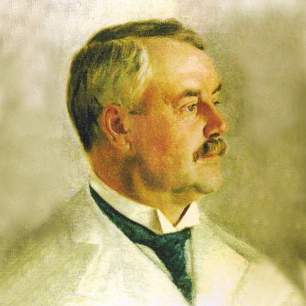
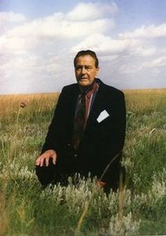
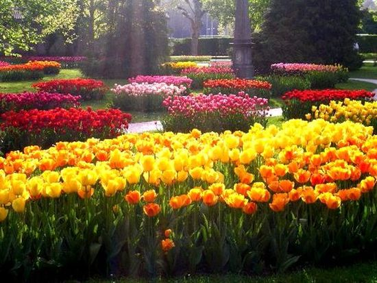
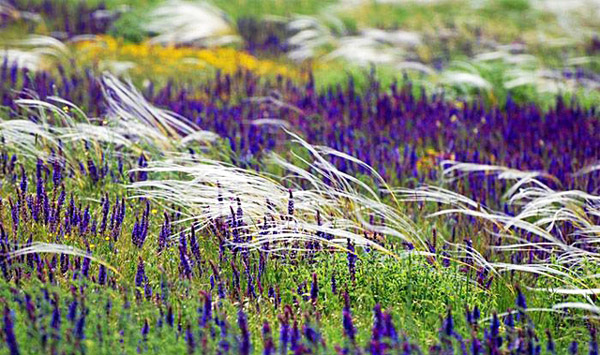
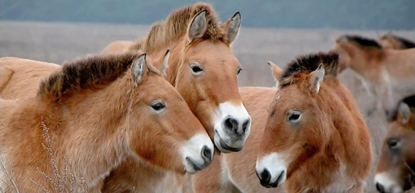

Історія заснування заповідника «Асканія-Нова» почалася в другій половині XIX століття, коли ще юний Фрідріх Едуардович Фальц-Фейн, нащадок німецьких колоністів, що освоювали південноукраїнські степи, і які володіли цією територією, почав створювати перші вольєри для птахів і звірів. Представник дворянського роду, барон, благодійник, громадський діяч, великий землевласник, засновник природоохоронних об’єктів — Фрідріх Едуардович все своє життя присвятив Асканії-Новій.
Фрідріх Едуардович Фальц-ФейнФрідріх Едуардович Фальц-Фейн народився 28 квітня (16 квітня за старим стилем) 1863 року в Асканії-Новій, був старшим сином Едуарда Фальц-Фейна та Софії Кнауф. З дитинства хлопчик вирізнявся незламною волею, активністю, добрим серцем. У віці 17 років в нагороду за добре здані іспити в гімназії отримав від батька 8 десятин землі на свій перший вольєр, де тримав кілька степових тварин.У 1882 році поступив в Дерптський університет, протягом курсу навчання об'їхав усі найбільші ботанічні сади і зоопарки світу. Ознайомившись з світовим досвідом природоохоронної діяльності й поселившись у родовому маєтку, Ф.Фальц-Фейн 1883 року заснував перший не лише на території Російської імперії, але й у світі екологічний заповідник: виростив сад, заклав ботанічний парк, відкрив зоопарк, у якому жило на волі 58 видів тварин (2 тисячі) та 154 види птахів.Професор М.М. Завадовський згадував: «Мене безмежно вражала справа його рук, кожне дерево, кожен гай або ставок були їм продумані і вражають цілісністю призначення. Ця людина не любила писати, і та маленька частина, що значиться в літературі під його ім'ям, часто написано лише по його вказівці. Його талант пішов у справу, в організацію, у створення крупного твору абсолютно особливого роду... З надзвичайною енергією він розгортав справу свого життя, віддаючи йому свій талант, свою рідкісної сили волю і кошти». Вчений врятував від вимирання дикого коня Пржевальського й дуже жалкував, що не встиг продовжити життя іншому виду диких коней — тарпанам. Він вивчав біловезьких зубрів й сприяв збереженню цього виду тварин, що потребують захисту. 1890 року — відчинив двері крупний краєзнавчий музей. В «Асканії-Нова» була багата бібліотека. Фактично Ф.Фальц-Фейн створив у Херсонському степу науковий інститут, який займався вивченням та збереженням природи краю. Сюди приїздили відомі вчені, тут проводилися наукові зібрання.

У 1898 р. Фальц-Фейн оголошує про відкриття приватного заповідника.
Декретами Ради Народних Комісарів УРСР Асканія-Нова 1 квітня 1919 була оголошена народним заповідним парком, а 8 лютого 1921 — Державним степовим заповідником УРСР. На Асканію-Нову було покладено завдання зберігати і вивчати природу цілинного степу, а також акліматизувати та вивчати можливо більше число видів тварин і рослин, які мають народногосподарське значення. При Асканії-Новій були створені науково-степова станція, зоотехнічна станція з племінним господарством, фітотехнічна станція та інші наукові заклади. Значно розширено зоопарк і ботанічний сад. Нині до складу заповідника входять ділянка заповідного степу, акліматизаційний зоопарк і дендропарк.
З 1932 року на базі державного заповідника Асканія Нова, до 1956 року — Всесоюзний науково-дослідницький інститут гібридизації та акліматизації тварин імені М. Іванова, сучасна назва Інститут тваринництва степових районів ім. М. Ф. Іванова «Асканія-Нова» — Національний науковий селекційно-генетичний центр з вівчарства. Узаповіднику починалася наукова діяльність багатьох вчених, зокрема С. І. Медведєва, І. К. Лопатіна.
Має 12 відділів (у тому числі ботанічного парку та заповідного степу і зоологічного парку), 9 лабораторій, науковий музей; веде експериментальне господарство і 4 племінні заводи сільськогосподарських тварин.
Інститут є центром науково-дослідної роботи в галузі породоутворення, великою базою племінного тваринництва.

*У 1983 р. заповідник Асканія-Нова реорганізовано у біосферний заповідник.
*У 1984 р. заповідник включено до Міжнародної мережі біосферних резерватів ЮНЕСКО.
*1989 року у складі УНДІТ «Асканія-Нова» було виділено у самостійну держбюджетну установу Біосферний заповідник «Асканія-Нова»
*У 1993 р. Україна підтверджує статус заповідника.
*У 1995 біосферний заповідник «Асканія-Нова» ім. Ф. Е. Фальц-Фейна став самостійним (можливо, від Інституту тваринництва).
*У 1998 році виходять монети присвячені 100-річчу біосферного заповідника «Асканія-Нова».
 ©Ларіонов Володимир 2016
©Ларіонов Володимир 2016
|
.jpg)
.jpg)
.jpg)